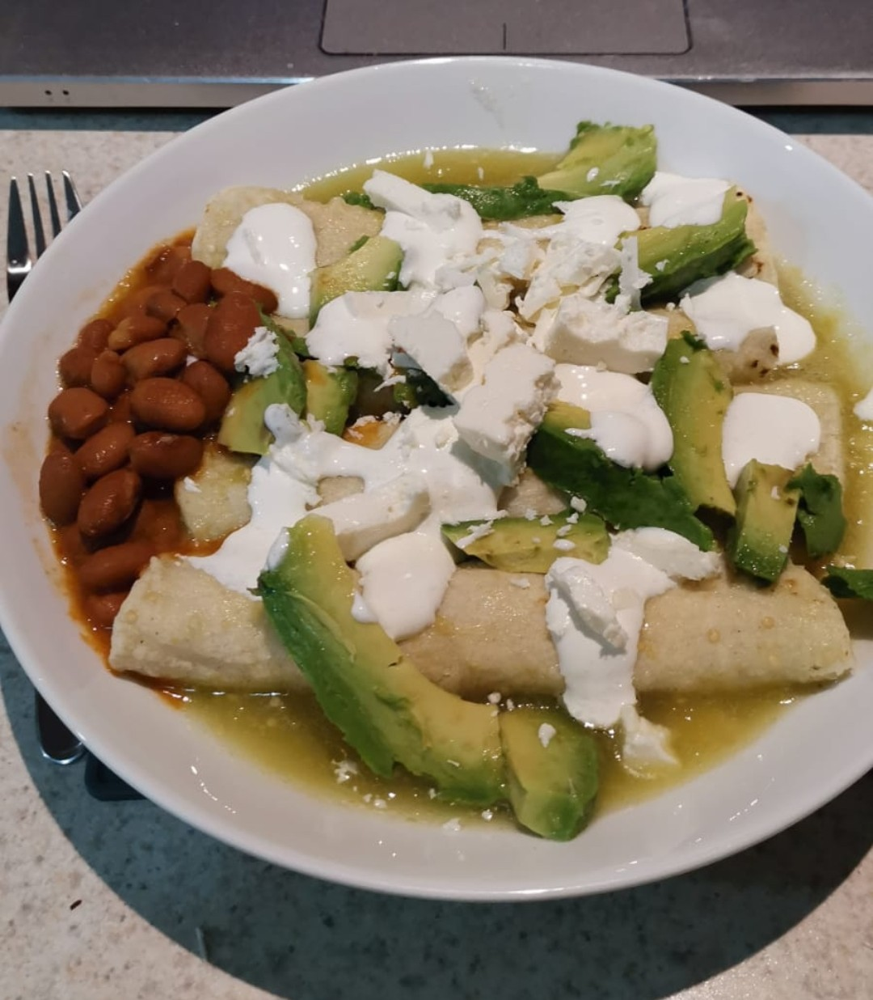

Enchiladas Verdes

Description
Enchiladas verdes is one of the best traditional mexican dishes. Made from the same ingredients as 65% of mexican dishes including maiz, chicken and some kind of
spicy sauce, although packing a great filling and taste value, it is found in most restaurants and you can't be lacking of a personal version of this delicacy.
Ingredients
- 4 Maiz tortillas.
- 250 gm Boiled chicken meat.
- 1 can of Black beans.
- 1 jalapeno.
- 12 green tomatoes.
- 1 Garlic clove.
- 1 bunch of disinfected cilantro.
- 1/2 White onion.
- 100 ml cooking oil.
- 50 ml white cream.
- 50 gm of panela cheese.
Steps
- Warm a pan with a few drops of cooking oil and cook a tortilla on both sides.
- Once the tortilla is ready, fill in with a little of the chciken meat and roll up like a taco. Place on a separate dish, repeat until you've made as many
enchiladas as you want.
- For the green souce, boil the green tomatoes and the jalapeno about 20 mins or until soft.
- Place the boiled green tomatoes and jalapeno in a blender and add the garlic clove, the cilantro and about 1/4 of the white onion.
- Fill the blender with about 3/4 of the hot water used to boil the tomatoes and blend the ingredients.
- Pour the souce on a pan and cook with medium fire while occasionally stirring the mix and adding the rest of the cooking oil.
- Douse the enchiladas with the green sauce and adding the cream and crumpled up cheese on top.
- Add the black beans to the side.
- Enjoy and provecho!